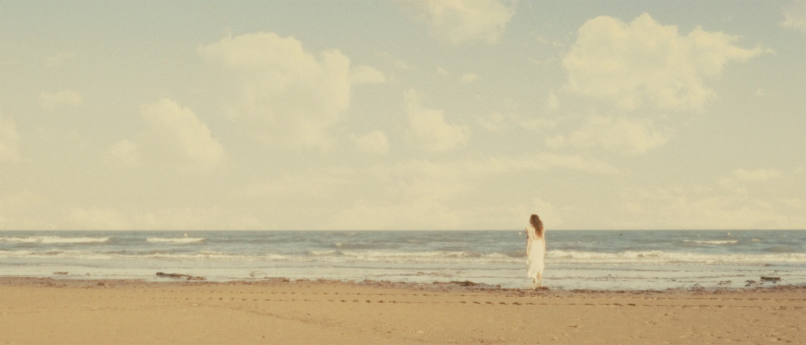
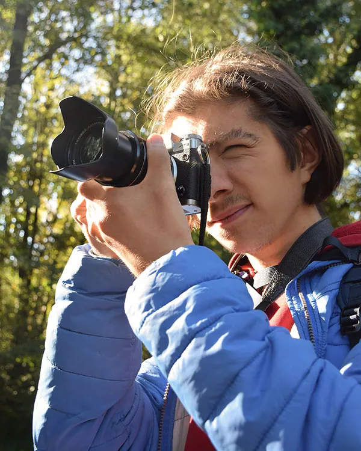

Davide Callegari


Chi sono
Racconto storie attraverso le immagini.
Basato a Venezia, racconto storie attraverso il cinema, il video e la fotografia. Mi occupo di direzione della fotografia e montaggio per i social, commercial, spettacoli teatrali, e la mia passione: cortometraggi e documentari.
Costruiamo la prossima storia insieme!
contatti